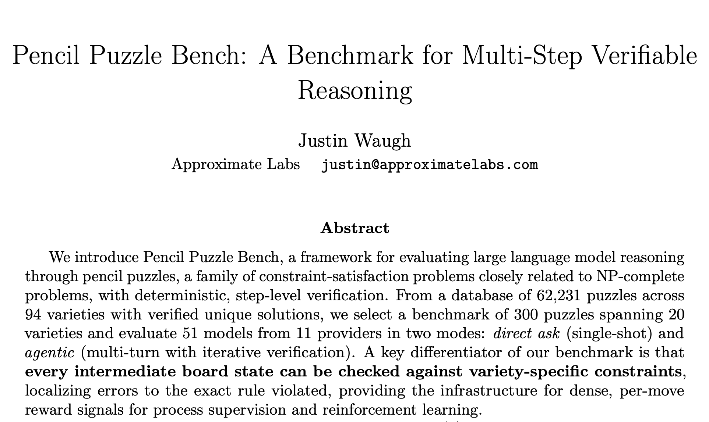
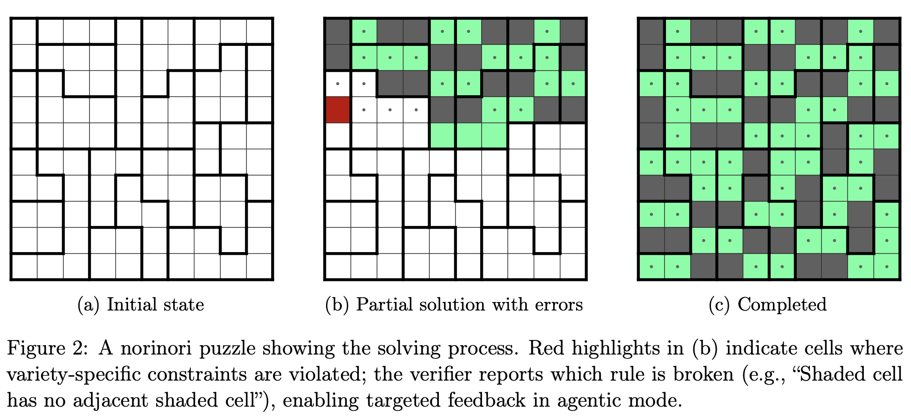
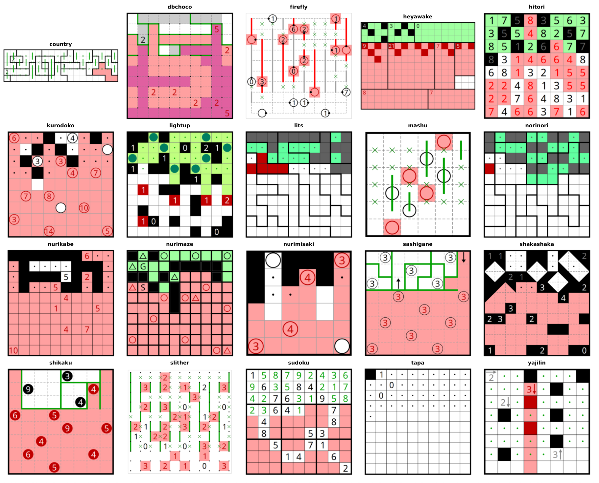
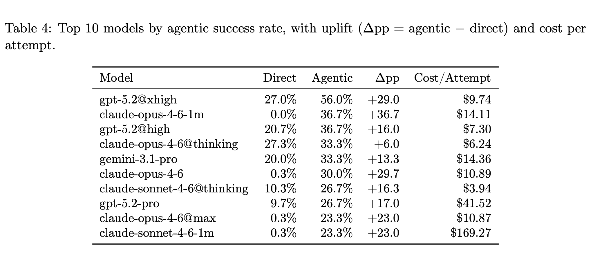
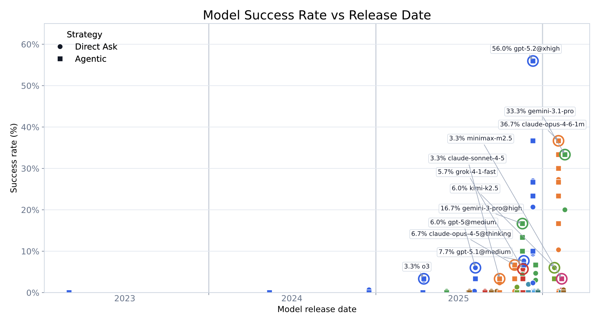
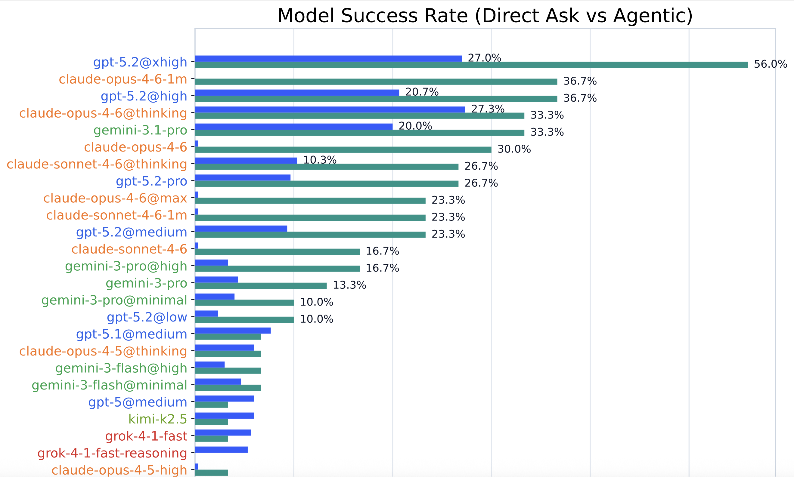
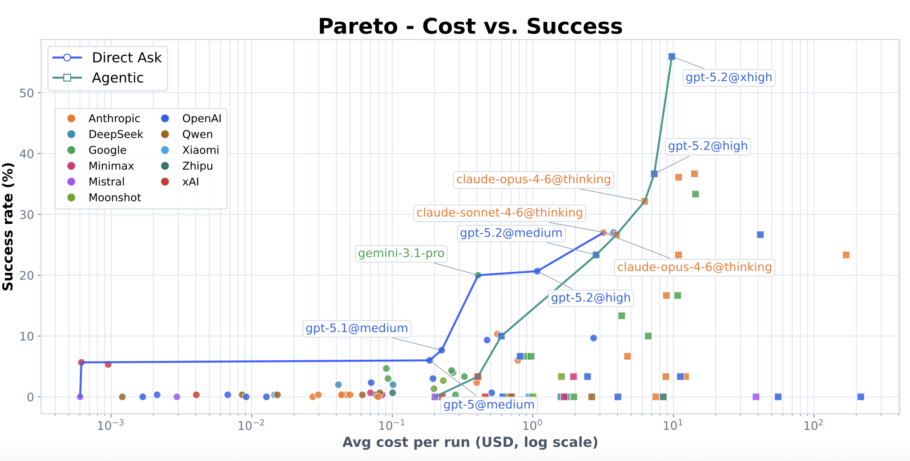
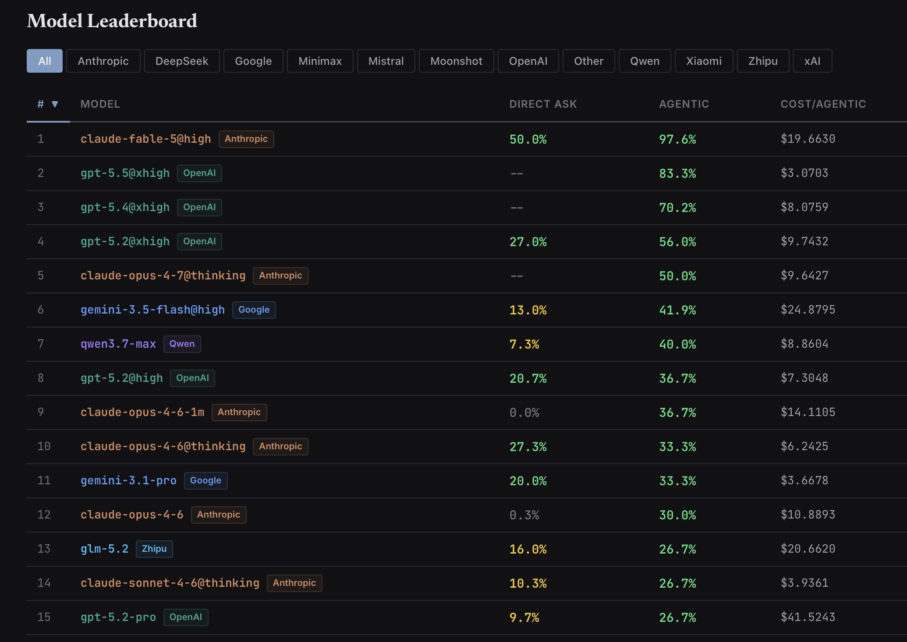

让大模型「逐步解数独/解谜」以构建智能评测基准：Pencil Puzzle Bench 与可验证的LLM多步推理¶
最强的推理模型，不借助算法、代码，仅靠推理，解普通数独，成功率有多少？33.3%。如果给他加上"边做边检查"的本事，依然不借助其他的计算工具，成功率冲到 56.0%。但是，如果是其他的有固定规则的日式纸笔谜题（pencil puzzles）呢？事实上，Pencil Puzzles 也能成为大模型推理评测的下一个试验场。
这篇文章简单分享一下 arXiv:2603.02119 Pencil Puzzle Bench: A benchmark for multi-step verifiable reasoning 这篇文章引入的新的评测基准，以及作者在探索 LLM + Pencil Puzzle 上得出的结论。
HuggingFace🥳, website & leaderboard 📊.

一、论文速览：一张卡片¶
| 维度 | 内容 |
|---|---|
| 标题 | Pencil Puzzle Bench: A Benchmark for Multi-Step Verifiable Reasoning |
| 作者 | Justin Waugh（唯一作者） |
| 机构 | Approximate Labs（近似实验室） |
| 发布 | arXiv 预印本 2603.02119，2026 年 3 月 |
| 一句话概括 | 用 62,231 道日式逻辑谜题、94 种谜题构建评测基准，让大模型在"每一步棋盘状态都能被自动验证"的环境里解谜题，评估多步推理能力 |
| 核心创新 | 不只是看"解没解出来"，而是能检查每一个中间步骤，并精确定位"违反的是哪条规则、哪个格子" |
| 配套资产 | pencil-puzzle-bench Python 包 + 全量数据 + 全部运行记录 runs.jsonl（HuggingFace） |
这是一篇很典型的"基建型"论文：它不宣称哪个模型赢了，而是修好了一条人人都能用的推理评测流水线，并顺手给出了 51 个模型在这条流水线上的表现画像。
二、为什么偏偏是逻辑谜题？——大模型评测的困境与破局¶
2.1 评测基准的三个痛点¶
论文主要评测时间集中在2025～2026年初，彼时大模型评测有一些集体焦虑：
- 单轮不够用。GSM8K、MATH、ARC 这些经典基准都是一问一答，测的是"一把梭"式的能力，测不出几十步的推理链条。
- 污染防不住。GSM8K 这类公开题集早就被训练数据"喂"进去了，模型"背答案"而不是"会推理"。
- 只能验结果，不能验过程。SWE-bench 这类代码基准只检查最终代码对不对，推理到一半是否走偏，根本无从得知。
而强化学习（RL）、过程奖励模型（PRM）这些训练技术，恰恰需要"过程"级别的信号——你要能告诉我哪一步错了、为什么错，模型才能学会自我修正。
2.2 逻辑谜题：为此而生¶
作者给出的答案是纸笔谜题——就是数独 (sudoku)、数回 (slitherlink)、Nurikabe、数方 (Heyawake) 这类日本纸笔逻辑谜题。它们普遍具有如下的性质：
| 性质 | 含义 | 为什么宝贵 |
|---|---|---|
| 可验证 (Verifiable) |
一个合法题目应该恰有一个解，这可以快速地由 SAT 求解器验证 | 有客观的正确答案 |
| 多步 (multi-step) |
需要数十到数百步演绎推理 | 天然的长链条任务 |
| 逐步反馈 (step-wise feedback) |
每一步都能按变种规则校验，报错还能指明违反哪条规则 | 稠密的"过程"级信号 |
| 低污染风险 (low contamination) |
社区习惯共享题面 URL，但几乎不公开发布答案 | 训练数据里"背答案"很难 |
| 解序无关 |
终局唯一，但到达顺序任意，可撤销重做 | 评测不怕"走法不同" |
| 多表示 | 同一棋盘有 ASCII / SVG / 像素图三种表示 | 为多模态评测留后门 |

逻辑谜题求解过程。
理论上，很多铅笔谜题是 NP-Complete的（数独、数回、Evolomino 都已被证明）。这意味着在特定情况下，"表面模式匹配"不可能通吃所有变种和尺寸——推理深度在这里是刚需。
作者认为这一块是一个"又难、又干净、又能够量化过程"的领域。这三点同时成立的领域在 AI 评测里非常稀有。
三、数据与技术链路：三层搭出来的"推理跑步机"¶
作者的技术栈是三段式接力，每一段都有明确分工：
graph LR
A[pzprjs（JS 谜题引擎）] -->|桥接转换| B[cspuz-solver2（SAT 求解器）]
B --> C[pencil-puzzle-bench（Python 包）]
subgraph 职责标注
A -.->|规则判定、错误定位、完成检测| A
B -.->|生成并验证唯一解| B
C -.->|评测 API、数据集、Gym 式 RL 接口| C
end3.1 三块基石¶
- pzprjs：一个成熟的 JavaScript 谜题框架，实现了 100+ 种谜题变种的完整规则判定，正是日本谜题社区 puzz.link 背后的引擎。谜题以 "classic URLs"（紧凑编码）在社区流传。
- cspuz-solver2：基于 SAT 的约束求解器，负责"这道题到底有没有解、解是否唯一"——保证数据集的每一道题都经过机器验证。
- Python 包：把引擎包成一行就能用的接口。论文给出了极简示例：
3.2 把“给出的解”翻译成“求解过程”¶
上述是既有的比较成熟的工具链，但中间有一个关键的"翻译"步骤：
SAT 求解器输出的是一整张完成状态（最终棋盘长什么样）；而 pzprjs 和模型打交道的是"一连串交互移动"（先点哪里、再点哪里）。
比如人类求解数独，不可能啪一下子把所有数字都填满了，而是循序渐进地，先用行/列/宫排除，把一些简单的格子填上，比如，R1C3 填 5，之类之类，然后再用一些更强的策略，比如 XY-Wings，Naked Pairs，一点一点填满剩下的格子。
于是，整个求解过程就能够被拆解成一系列“可行的走法序列”：
把"终局棋盘"拆解为"可行走法序列"后，能够带来连锁性变化：
- 模型可以用解轨迹做监督微调，帮小模型"起步"；
- 可以据此做难度分析；
- 可以验证每道题唯一解成立；
- 整个流程和真实人类的解谜体验对齐
实际过程比上面说的要复杂一些，可以看看 Kimi 帮我整理的 pzprjs 支持的步骤：
| 指令 | 语法 | 含义 | 示例 |
|---|---|---|---|
newboard |
newboard,W,H |
按宽×高新建空白盘 | newboard,5,2 |
playmode/editmode |
playmode[,输入模式] |
切到求解 / 编辑模式（可带输入模式） | playmode,shade |
mouse |
mouse,{按键},{坐标…} |
一次鼠标手势：点 / 拖 / 多段折线 | mouse,left,1,1,9,1 |
key |
key,{键}[,{键}…] |
一次键盘输入序列（每个键按下并松开） | key,1,right,- |
cursor |
cursor,X,Y |
把输入焦点移到指定格 / 板外件 | cursor,1,1 |
clear |
clear |
清空全部输入 | clear |
ansclear |
ansclear |
只清"答案"（求解层） | ansclear |
subclear |
subclear |
只清"辅助记号" | subclear |
setconfig |
setconfig,{键},{值} |
设置运行选项 | setconfig,use,1 |
flushexcell |
flushexcell |
重建棋盘外的额外格 | flushexcell |
3.3 逐步验证¶
评测的核心机制是四步验证流水线：
- 移动前：检查当前棋盘是否已有违规；
- 施加移动：执行一个坐标式动作（如
mouse,left,3,5）； - 移动后：立刻检查这一步引入了哪些新违规；
- 完成检查：判定整道题是否被正确解开。
每个变种都定义了自己的有序约束集：先查局部/直接约束（如"两个阴影格子相邻了"），再查全局状态约束（如"回路必须连通"）。违反时引擎不仅说"错了"，还告诉你错在哪条规则、哪几个格子，并在可视化里用红色高亮。
举例说明，引擎能给出的报错是这种粒度：
- Nurikabe："阴影格形成了 2×2 方块"、"两个带数字的岛连在了一起"
- Slitherlink："回路在顶点分叉"、"数字线索不满足（期望 2 条边，实际 3 条）"
- Norinori："阴影格周围没有相邻阴影格"、"区域内阴影格少于 2 个"
- Sudoku："行内数字重复"、"宫内数字重复"
通过让"过程可证伪"，这套基准可以无缝接上 RLVR（基于可验证奖励的强化学习）、过程奖励模型等——作者认为这是他的工作“最想为社区留下的一笔资产”。
四、数据集是怎么做出来的：前所未有之处与三点提醒¶
4.1 规模与来源¶
完整数据库是一个惊人的体量：
| 统计项 | 数值 |
|---|---|
| 谜题总数 | 62,231 道 |
| 谜题类别 | 94 种谜题 |
| 创作者数 | 814 位不同的作者提供的题目 |
| 谜题 | SAT 验证唯一解（100%）+ 逐步解轨迹 + 来源溯源（URL/作者/时间戳） |
| 求解步骤量中位数 | 78 |
| 盘面大小中位数 | 100 格 |
数据来自 puzz.link 社区 ——一个日本谜题爱好者社区，聚合了来自 Twitter、个人博客和谜题比赛的各类题。也就是说，这些不是合成题，而是人类创作者多年"手作"出的真难题，质量与多样性都有保障。
4.2 三层评测集（"Golden"）¶
从全库中再抽三层，按难度分层（每种内 short/medium/long 各取 5 道，按必要步骤数划分）：
| 评测集 | 题数 | 变种 | 用途 |
|---|---|---|---|
| Golden 300 | 300 | 20 | Direct Ask 全量评测 |
| Golden 30 | 30 | 4（yajilin, sashigane, lits, lightup） | 大多数模型的 Agentic 基线 |
| Golden 60 | 60 | 20 | 3 个顶级模型的 Agentic 扩展集 |

作者的 20 类经典变体，测试 Agentic。注意标红的表示执行中途，发现矛盾、错误的位置。
4.3 创新点¶
- 逐步级验证 + 错误定位。别的谜题基准（GridPuzzle、ZebraLogic、甚至最近的 Sudoku-Bench）要么只有文本、要么只看终局。Pencil Puzzle Bench 是第一个把每一步棋盘状态都对变种约束做程序化校验、并精确定位到"哪条规则、哪个格子"的。
- 坐标式交互移动。模型不是"说答案"，而是像真人一样在真实 UI 坐标系里落子（左键/右键/划线），可直接对接真实解谜环境。
- 用"社区规范"论证抗污染。这是很聪明的一手：不是"这题很冷门所以没被训练数据看到"，而是"puzz.link 社区的礼仪就是不发布答案，发答案是不礼貌的"——用文化规范来做抗污染的软证据，比单纯冷门更有说服力。
- 可作 RL 训练场。逐步验证信号可以组合成稠密奖励函数（违规数量变化塑形、进度奖励），加上 Gym 兼容接口，是现成的 RL 沙盒。
4.4 Limitations¶
- 评测只用文本。模型拿到的是 ASCII 棋盘，Agentic 模式下多了一个返回 SVG 文本的
render_board_as_svg()工具；像素图从未被使用。所以"视觉—空间推理"强的变种可能被低估，多模态评测是留给未来的工作。 - 评测集偏小 + 单次点估计。每变种仅 15 题，多解 1 题就会让该变种成功率波动 6.7 个百分点；所有成功率都是单次运行的点估计，没有置信区间、没有重复试验、也没有人类表现基线。论文自己在 Limitations 里承认了这一点。
- Agentic 评测的规模不对称。大多数模型只在 30 道题的基线上做 Agentic，只有 3 个顶级模型在 60 道全变种扩展集上跑——跨模型比较 Agentic 数字时要格外小心。
五、评测结果：51 个模型，两条"能力轴"——大模型进化的时间表¶
5.1 评测阵容¶
论文一口气评测了 51 个模型、来自 11 家提供商，覆盖 OpenAI（14 个模型配置）、Anthropic（11）、Google（7）、xAI（3）、DeepSeek（2）、Qwen（5）、Mistral（2）、Moonshot（2）、Minimax（2）、Zhipu（2）、Xiaomi（1）——既有闭源旗舰，也有开源/开放权重模型。这本身就是 2026 年初大模型版图的一份快照。
我仿佛看到了token在燃烧 ...
两种策略设计得很朴素（作者强调没做任何提示词优化，目的是"量现状"而非"刷分"）：
- Direct Ask（直问）：给模型完整棋盘，让它一次性输出完整的 JSON 格式的步骤列表，只推理一次。
- Agentic（多轮代理式）：给模型工具（
make_move、check_board、reset_puzzle、give_up等），让它落子 → 检查 → 看报错 → 修正，循环直到解出或放弃。输出不合规时框架会自动催它："还没做完，继续！！"或者“错了，快调整！！”
5.2 一场"马拉松"式的评测¶
Agentic 模式不是跑几步就算完，而是真正的长程多轮：
| 统计 | 均值 | 中位数 | P90 | 最大 |
|---|---|---|---|---|
| 回合数/次 | 57.2 | 29 | 113 | 1,221 |
| 时长/次 | 40 分钟 | 17 分钟 | 108 分钟 | 14.3 小时 |
作者说为了进行评测，在对应数据集上（并没有让所有算例都跑Agentic）进行了 1,602 次 Agentic 运行，叠加直问总共 17,032 次运行。一场单题解谜最多 1,221 个回合、持续 14 小时——这不是"会调工具"就能完成的事，它同时考验长上下文利用能力和持久推理。
5.3 最重要的发现：两条相互独立的能力轴¶
论文全文最漂亮的一个结论是——大模型在这类任务上的进步来自两个正交的维度：
- 推理深度（reasoning depth）：靠 effort 级别、扩展思维（extended thinking）控制；
- Agentic 迭代（agentic iteration）：靠"做一步→检查→纠错"的外部闭环控制。
它们不冗余、互补，且 "直接问" 表现越弱的模型，从 Agentic 迭代中获益越大。论文称之为 Agentic 鸿沟（the agentic gap）。
看几个极端案例：
| 模型 | 直接问 | Agentic | 提升 |
|---|---|---|---|
| Claude Opus 4.6（默认，无扩展思维） | 0.3% | 30.0% | +29.7pp |
| Claude Opus 4.6@thinking | 27.3% | 33.3% | +6.0pp（匹配集 +4.8pp） |
| GPT-5.2@xhigh | 27.0% | 56.0% | +29.0pp（匹配集 +35.7pp） |

作者举例了 Claude Opus 4.6：以直问来看，它的内部推理几乎不存在（直问 0.3%正确率），但只要给它"能动手、能看报错"的外部闭环，成功率冲到 30.0%——靠"外部脚手架"补足了"内部推理"的缺失。而强如 GPT-5.2@xhigh，即使已经很强，也还能再靠迭代提升 35.7 个百分点。最强结果总是"深度推理 + 迭代验证"双轴叠加的结果。
5.4 大模型进化的"能力快照"¶
再把这些点串成时间线，你会看到一个非常清晰的能力爆发曲线：
- 2024 年底之前发布的模型（GPT-3.5-turbo、GPT-4o、GPT-4.1、o1……）→ 0% 或接近 0% 的解题率；
- 2025 年初 o3 首次冒出 3.0% 的"非平凡"成绩；
- 2025 年 11 月起，GPT-5 家族与推理增强模型带来爆发式增长。

换句话说，"不借助工具解日式逻辑谜题"是一项 2025 年底才从LLM中普遍诞生的新能力——2024 年的模型一题都不会。没有这个基准，你很难把"模型变强了多少"量化得这么精确。
Claude 家族内部的进化弧同样耐人寻味（同一配置：默认 effort、无扩展思维）：
从 Opus 4.5 到 4.6 的跨越，几乎全部发生在 Agentic 模式——两代模型"单发解题"能力几乎没变，但新一代更善于利用外部验证循环。这说明模型进化的"下一个前沿"正在从"想得更多"转向"会与环境互动"。
5.5 反直觉的两个细节¶
- 更高 effort 不一定更好：Claude Opus 4.6 默认配置（30.0%）反而胜过 @max（23.3%）。推理深度与 Agentic 有效性之间是非单调关系——想得太多可能适得其反。
- 推理努力缩放惊人但带刺：GPT-5.2 从无推理到最高 effort（xhigh），直问成功率从 0.33% 提升 81 倍到 27.0%（各档 0.33% → 2.3% → 9.3% → 20.7% → 27.0%）。但 xhigh 档有 35% 的请求在返回前就失败了——能力与可靠性之间出现了尖锐的权衡。

5.6 解开"没人解过的变种"¶
- Agentic 扩展评测解开了 3 个此前没有任何模型“直问”能够解出的变种（sashigane、heyawake、shakashaka）——至此全部 20 个变种至少被解出过一次；但仍有多达 49% 的单题没有任何模型解出（Agentic 之前是 57%）。
- 最扎心的落点是 Sudoku：最强模型 @xhigh 在普通数独上也只解出 33.3%。数独是训练数据里最常见、最"背得出来"的变种，仍然只有三分之一的成功率。
作者筛选出的 20 个 Golden 数据集的求解情况、规则一览（按最优解题率排序）：
| 变种 | 规则一句话 | 最优模型 | 最优解题率 |
|---|---|---|---|
| Norinori | 涂阴影，每格恰邻一个阴影格，区域内恰 2 个 | gpt-5.2@xhigh | 100% |
| Shikaku | 把盘面分成矩形，每块恰含一个数字 | gpt-5.2@xhigh | 86.7% |
| Lits | 每区放一块四连块，无 2×2 满铺，同形不共边 | gpt-5.2@xhigh | 73.3% |
| Hitori | 涂格去重，无相邻阴影，未涂格全连通 | claude-opus-4-6@thinking | 66.7% |
| Lightup | 放灯照亮全盘，灯不能互照 | claude-opus-4-6@thinking | 66.7% |
| Mashu | 画回路过每圆，黑白圆转向规则不同 | gpt-5.2@xhigh | 66.7% |
| Tapa | 涂格，线索表示周围连续阴影长度 | gpt-5.2@xhigh | 66.7% |
| Firefly | 从萤火虫引路成连通网络，转向有计数 | gpt-5.2@xhigh | 46.7% |
| Nurimisaki | 涂格，圆点格恰邻一个未涂格 | claude-opus-4-6@thinking | 40.0% |
| Yajilin | 涂格 + 回路，箭头指示方向阴影数 | gpt-5.2@xhigh | 40.0% |
| Nurikabe | 涂墙，数字岛大小唯一，墙全连通 | claude-opus-4-6@thinking | 33.3% |
| Slither | 画回路，数字=该格被圈边数 | gpt-5.2@high | 33.3% |
| Sudoku | 每行/列/宫 1–N 各一次 | gpt-5.2@xhigh | 33.3% |
| Kurodoko | 涂格，数字=直线可见未涂格数 | gpt-5.2@xhigh | 26.7% |
| Nurimaze | 涂格成迷宫，无同色 2×2，S→G 通路过圆 | claude-opus-4-6@thinking | 26.7% |
| Sashigame（*） | 分成 L 形区，角在圆、端在箭头 | gpt-5.2@xhigh | 20.0% |
| Country | 回路过每国一次，数字=途经格数 | gemini-3.1-pro | 13.3% |
| Dbchoco | 分成黑白两同形区域 | gpt-5.2@xhigh | 6.7% |
| Heyawake（*） | 房间内阴影计数，无直线穿 2+ 房界 | gpt-5.2@xhigh | 6.7% |
| Shakashaka（*） | 放三角形，空白区成矩形 | gpt-5.2@xhigh | 6.7% |
标（）的变种仅靠 Agentic 迭代才被解出*——直问模式下为 0%。
六、新结论：什么才真正决定谜题的难度？¶
论文把难度分析单独做了一章，结论很有趣：
- 步数不是好指标：把解题率对"必要步骤数"回归，调整 R² 只有 0.092——步骤数几乎解释不了难度差异。
- 变种本身更能说明问题：仅变种类型这一个因素（η²=0.242）就能解释比步骤数多 2.6 倍的方差。
- 「求解过程的压缩率」指标更有说服力：把求解过程的序列做 zlib 压缩，"压缩后大小 / 原始大小"的比值，回归后调整 \(R^2\) 高达 0.385，预测力是步骤数的 4.2 倍。
- 加上面积仅到 0.415，再加变种哑变量后到 0.621。
这里的直觉可能是，求解压缩率高的解，意味着棋盘上有大量重复、有结构的模式，模型可以从部分进展"举一反三"；压缩率低的解，每一步都是高熵的、必须做全新决策——那才是真正的难。作者认为这为课程学习（curriculum learning）提供了一把原理性的"难度标尺"。
七、成本账：近 3 万美元，1.7 万次运行，效率差距 6.6 万倍¶
- 总记录成本约 $28,246（17,032 次运行；实际更高，因为出错中断的运行没有计入已完成的 token）。
- 每次成功所需的成本，跨模型变化高达 66,822 倍。
- 成本效率的极端是 Grok 4.1 Fast：每次成功的case仅耗费 $0.01，但成功率低；而成功率最高的 GPT-5.2@xhigh，每次尝试都需要烧掉 $9.74。
- 一个典型的"能力—成本"帕累托前沿由此成形：要么便宜但解不出来，要么贵但解得多——中间地带目前还很稀疏。
论文还记录了基础设施的系统性极限：xhigh 的失败并非随机网络抖动，100% 的失败集中在 1–4 小时区间，62% 的峰值在 2–3 小时——指向服务端约 2.5–3 小时的硬超时。

附录里作者给出了 Agentic 下 Token 燃烧的情况。Claude 4.6 的 Agentic 模式把求解成功率从几乎没有，拔高到了 23.3%，但是付出的代价是每次约 169.27 $ 的成本。
| 模型 | 直问 | Agentic | Δpp | 成本/次 |
|---|---|---|---|---|
| gpt-5.2@xhigh | 27.0% | 56.0% | +29.0 | $9.74 |
| claude-opus-4-6-1m | 0.0% | 36.7% | +36.7 | $14.11 |
| gpt-5.2@high | 20.7% | 36.7% | +16.0 | $7.30 |
| claude-opus-4-6@thinking | 27.3% | 33.3% | +6.0 | $6.24 |
| gemini-3.1-pro | 20.0% | 33.3% | +13.3 | $14.36 |
| claude-opus-4-6 | 0.3% | 30.0% | +29.7 | $10.89 |
| claude-sonnet-4-6@thinking | 10.3% | 26.7% | +16.3 | $3.94 |
| gpt-5.2-pro | 9.7% | 26.7% | +17.0 | $41.52 |
| claude-opus-4-6@max | 0.3% | 23.3% | +23.0 | $10.87 |
| claude-sonnet-4-6-1m | 0.3% | 23.3% | +23.0 | $169.27 |
八、成果产出：给社区留下的"推理训练场"¶
用一句话总结产出：一篇论文 + 一个开源基准包 + 一个数据集 + 一份完整透明的运行日志。
| 产出 | 内容 |
|---|---|
| 数据集 | 62,231 题全库（含逐步解轨迹）+ 300 金标题 |
| Python 包 | pencil-puzzle-bench：加载数据、走棋、校验、判断完成 |
| 运行日志 | runs.jsonl（HuggingFace）记录每次运行的模型/谜题/策略/结果/成本/时长——透明可复现 |
| 评测画像 | 51 模型 × 2 策略的完整成绩表 |
| 新结论 | 两轴能力观、Agentic 鸿沟、压缩率难度度量 |
作者展望的落地路径：
- 逐步奖励的强化学习（RLVR）：用"每步每约束的验证信号"做稠密奖励微调；
- 过程奖励模型（PRM）训练：验证器天然提供逐步的监督标签；
- 课程学习：用压缩率做原理性难度度量，由易到难地训练；
- 多模态评测：让模型"看图"解谜，而不是只读 ASCII 文本。
当然了，如果你不喜欢这些技术细节，只想看个好玩，你可以访问作者自己搭建的这个网站，动态更新着不同 LLM 在这些逻辑谜题上的分数：

总结：¶
-
逻辑谜题从来不只是休闲玩具。 数独、数回、Nurikabe 这套"手作难题"，恰好是约束满足（很多还是 NP 完全）问题中最可验证、最多步、最能给过程反馈的一类。大模型时代，它们从"报纸角落的消遣"升级成了推理训练的试金石：一个 2024 年模型一道都不会、2026 年最强模型也只解三分之一数独的领域，就是衡量"推理能力"最苛刻也最干净的标尺。
-
时间线告诉我们，LLM 能力不断进化；Agentic Gap 告诉我们进化方向正在从"内部想得更深"转向"学会与外部验证器协作"。
-
未来的纸笔逻辑谜题研究，会比"解谜"本身更值钱。 当每走一步棋都能得到"违反哪条规则、在哪一格"的反馈时，谜题就从一个"结果导向"的娱乐，变成了一个"过程导向"的训练环境——PRM、RLVR、课程学习、多模态理解，都能在这块试验田里种下自己的作物。Pencil Puzzle Bench 的意义，不在于它刷出了什么榜单数字，而在于它把"可验证的多步推理"变成了一门可以量化的科学。